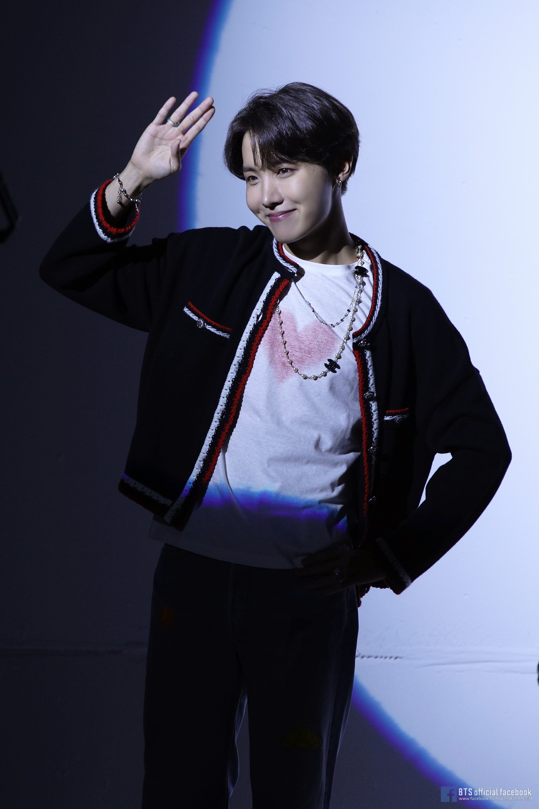

He is the youngest Korean male solo artist to chart on Billboard's Hot 100
"I'm your hope, you're my hope, I'm J-Hope :)"

J-Hope became the first member of BTS to chart on the Billboard Hot 100 as a soloist.
#InMyFeelingsChallenge #HopeOnTheStreet pic.twitter.com/Bm8bxtKsFq
— 방탄소년단 (@BTS_twt) July 23, 2018